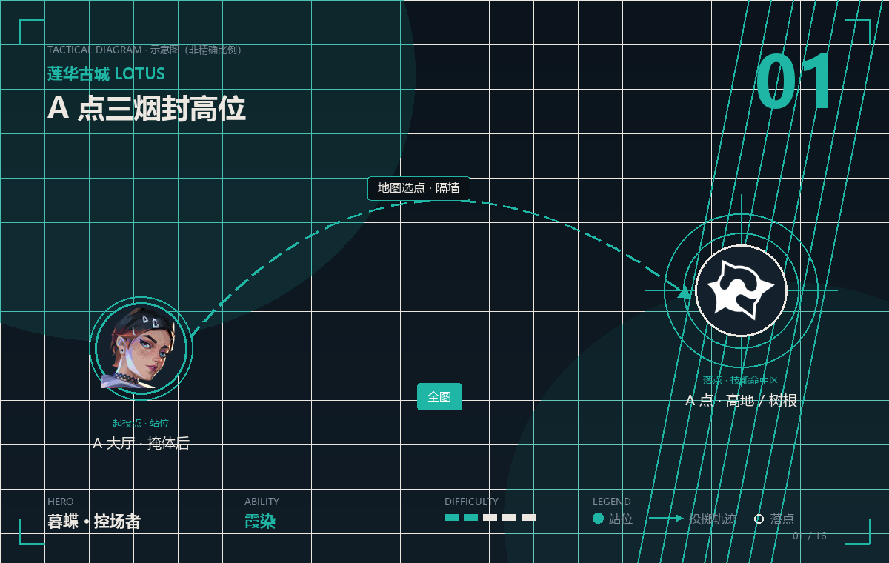
POINT 01 · 霞染
A 点三烟封高位
霞染 · 全图 · 难度
- 站位
- 在 A 大厅的掩体后按战术地图选点，完全不需要露身位。
- 瞄点
- 地图上把烟放在 A 高地入口、A 树根通道、A 包点正面三个位置，形成一道「弧形烟墙」。
- 落点
- A 点的三个高台视野同时被切断，队伍可以从 A 大道贴进去。
- 时机
- 队伍集结到 A 大道的瞬间。烟可以提前放，覆盖时间够。
提示 暮蝶阵亡后还能用霞染放短烟。死了别急着点复活，先给队友补一颗烟再走。

莲华古城有旋转门、可破坏墙、三包点这套独特机关，进攻路线随时会变。这张图的点位不能只算「封哪」，还要算「对面会从哪个机关绕过来」。
莲华古城三个包点、大量高低差，暮蝶的烟可以在她死后继续放——这在「多人分散抢三点」的阵容里价值极高，复活机制也和这张图的拉扯节奏很搭。

霞染 · 全图 · 难度
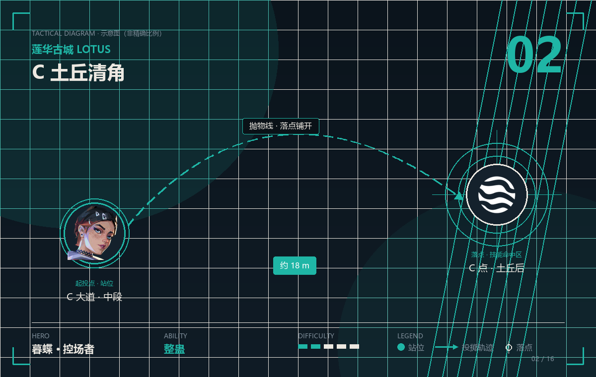
整蛊 · 约 18 m · 难度
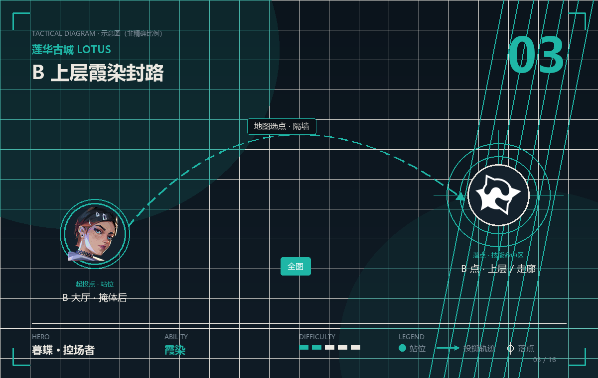
霞染 · 全图 · 难度
钛狐的技能全部是「隔墙打击」，莲华古城三包点的建筑特别多，可以对着墙体直接打伤害——他在这张图等于自带一台「拆楼机」。
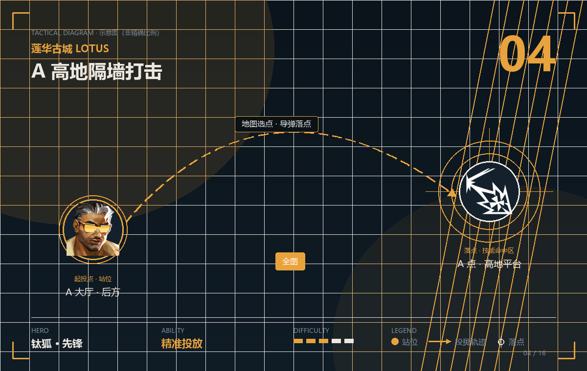
精准投放 · 全图 · 难度
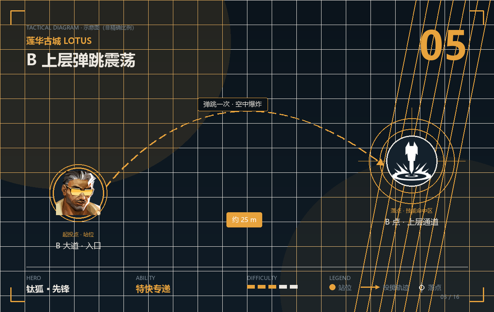
特快专递 · 约 25 m · 难度
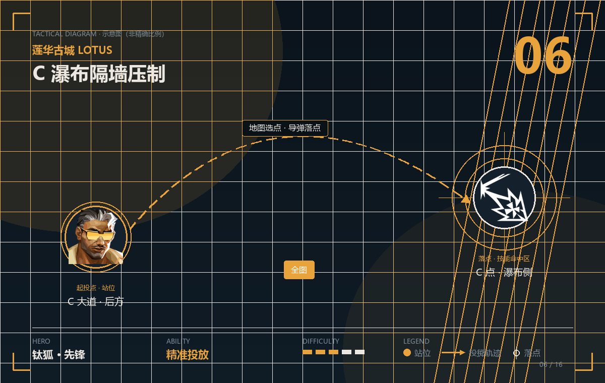
精准投放 · 全图 · 难度
莲华古城有「可破坏墙」和「旋转门」两个特殊机制，维斯的裁断可以跟着门一起封锁通道——她在这张图的强度，来自「把动态的地图变回静态」。
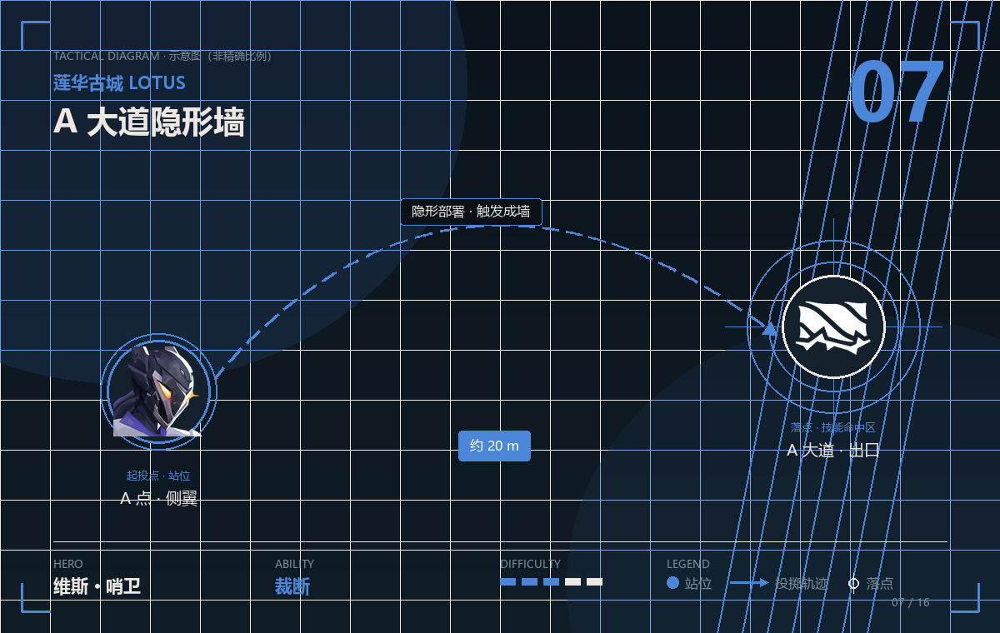
裁断 · 约 20 m · 难度
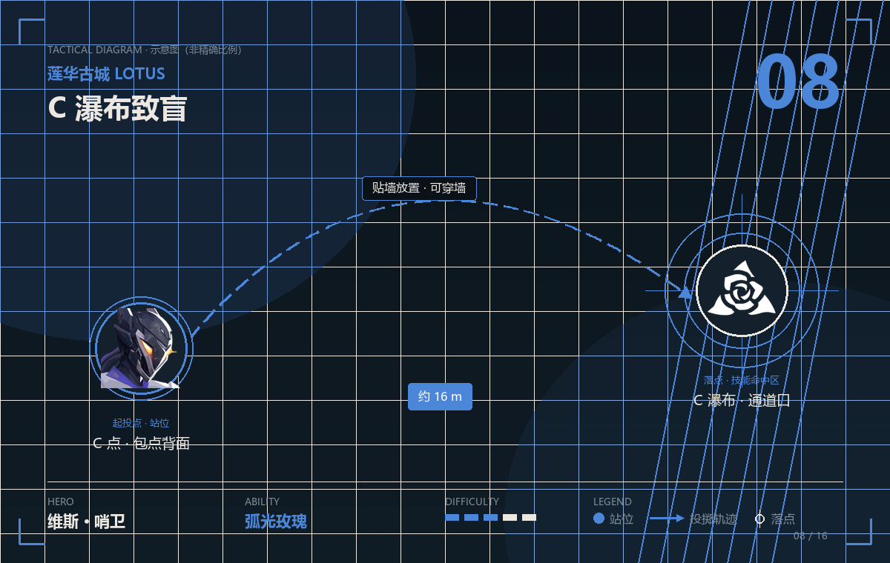
弧光玫瑰 · 约 16 m · 难度
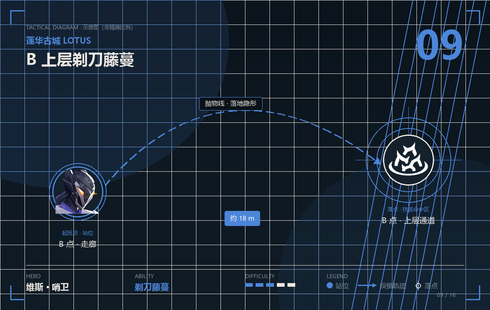
剃刀藤蔓 · 约 18 m · 难度
莲华古城的 A 树根和 C 土丘都是「贴脸交战」的位置，壹决的稳态剥离可以直接破掉对手的枪法自信——他的点位逻辑是「把对枪变成对面必输的对枪」。
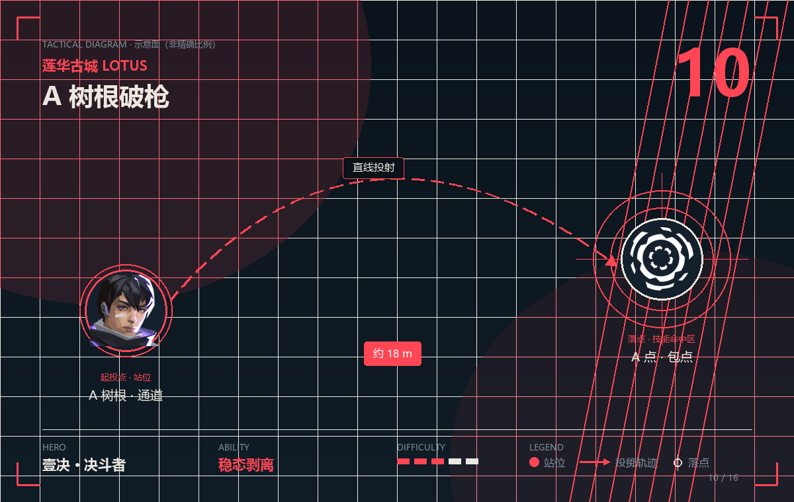
稳态剥离 · 约 18 m · 难度
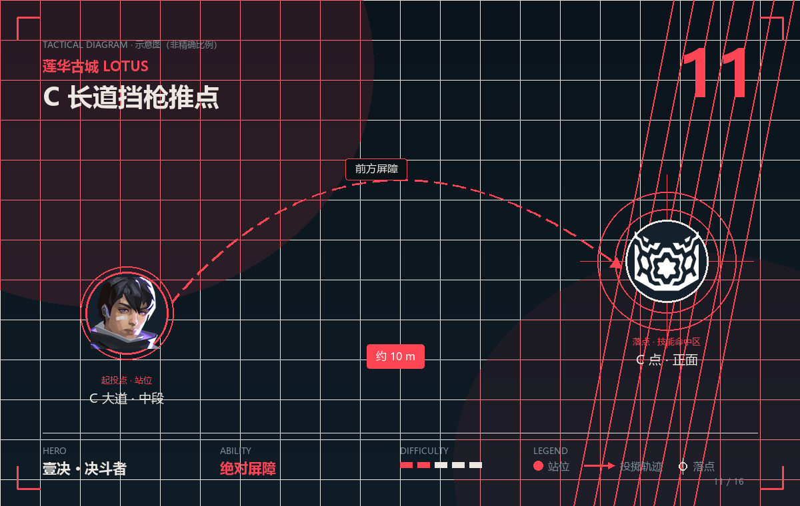
绝对屏障 · 约 10 m · 难度
莲华古城建筑密集、掩体多，黑梦的幽爪可以隔墙标记，是清三包点最有效的信息位——一颗爪下去，整个包点谁在哪都清楚了。
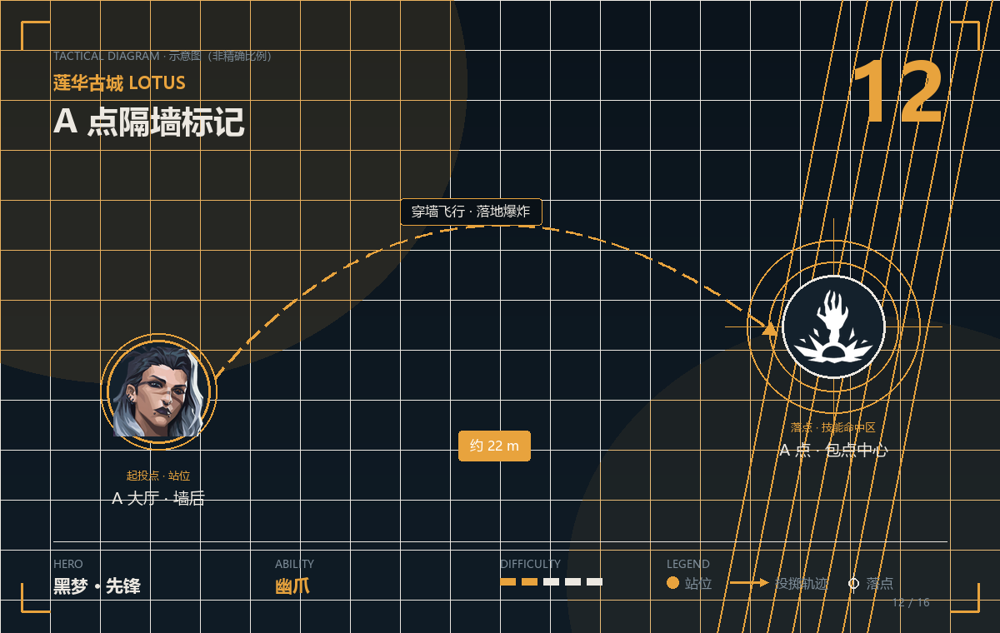
幽爪 · 约 22 m · 难度
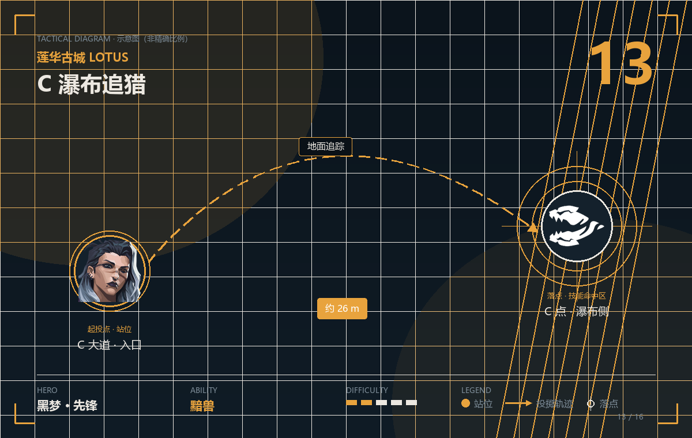
黯兽 · 约 26 m · 难度
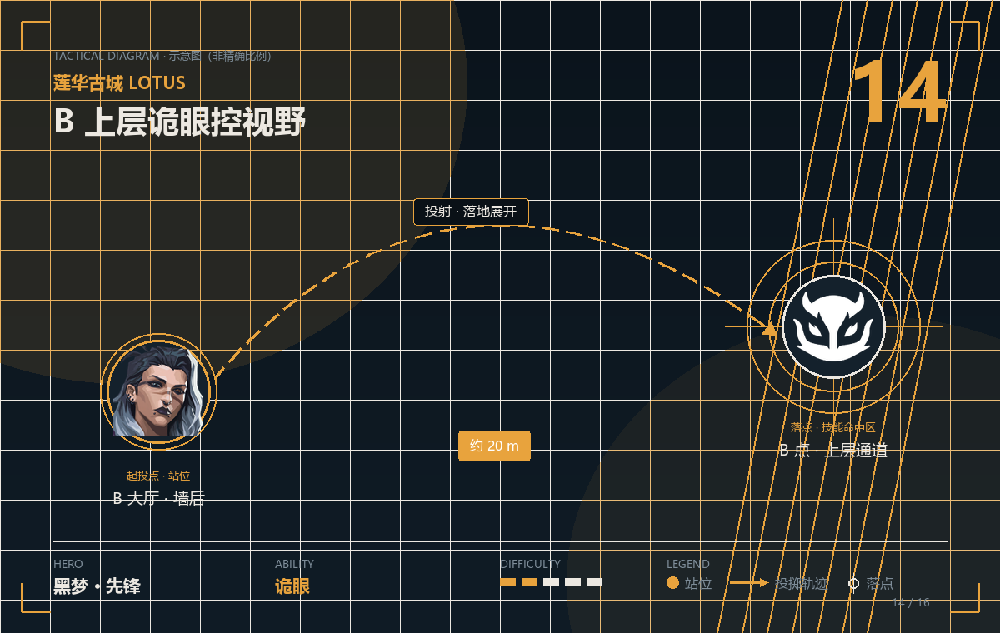
诡眼 · 约 20 m · 难度
莲华古城的 C 长道和 A 高地都有「一眼狙全场」的长枪线，尚勃勒的金牌猎头架枪几乎无解——他是这张图最典型的「用一把枪守住一条线」。
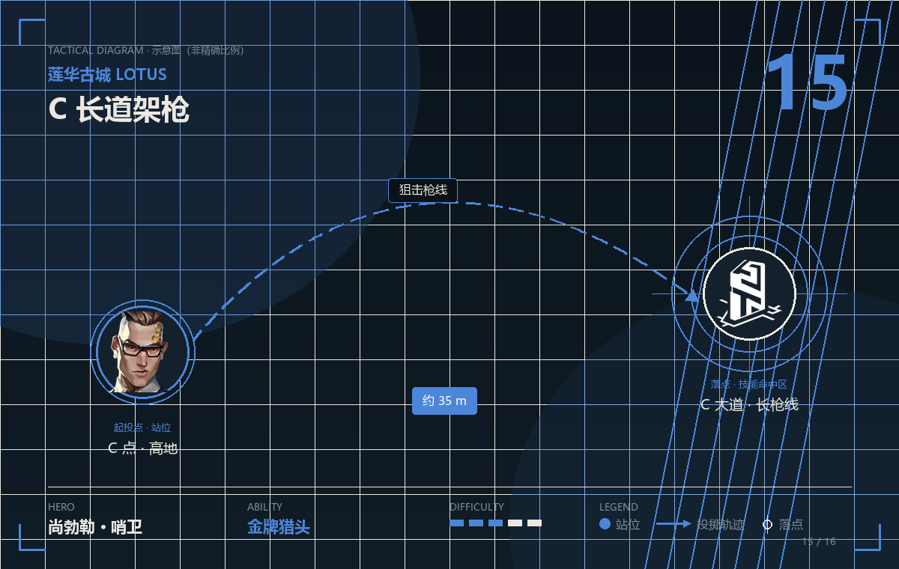
金牌猎头 · 约 35 m · 难度
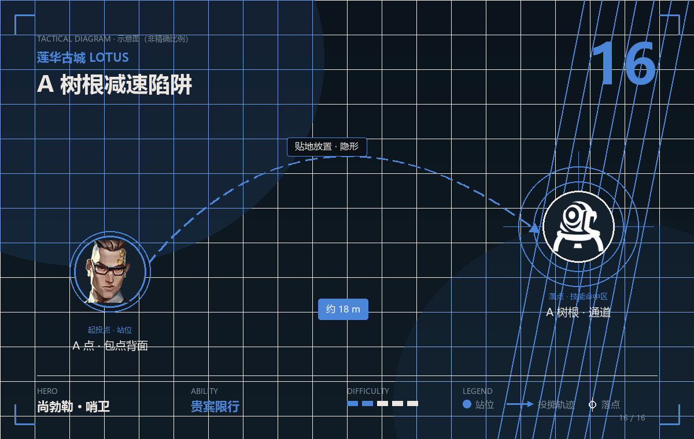
贵宾限行 · 约 18 m · 难度